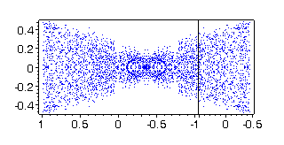

| x'1 = u
x'2 = x1 x'3 = v x'4 = x3 x'5 = v x1 |
| u | <= 1, | v | <=
1
x(0) = (0, 0, 0, 0, 0) t belongs to [0,1] |
We try to describe the reachable set at the moment t = 1. The Volterra series of the system is finite (finite number non zero terms) and consists of first and second order terms. It follows that we can choose timestep 1 and can calculate the exact single trajectory. The most complicated task is the choice of control sets such that the trajectory endpoints could outline the reachable set.
The pictures and Maple files present 3 dimensional projections of the reachable set in the space of variables x1, x2 and x5.
1. We choose controls piecewise constant functions
(= 1 or = -1) with one jump - at the point t = p for u(t)
and at the point t
= q for v(t). The parameters
p
and q are independent in the interval [0, 1]. The reachable set
points (x1, x2 and x5)
- 3845 points, are written in the text file vlad01.
They formed a cylindrical surface, parallel to the axis x5
(Fig.
2). The projection of this surface on the plane x1x2
is a simple closed curve (Fig. 1).
|
|
Fig. 2 |
2. We choose controls piecewise constant functions
(= 1 or = -1) with two jumps - at the points 0 < p1
< p2
< 1 for u(t)
and at the points 0 < q1 < q2
<
1 for v(t). The parameters are independent and we calculate
points of the reachable set using regular net with step 0.1 for jump points.
The result (Maple) file is vlad2a.
Figure 3 shows 5188 points - sequences of black columns. Also an
example with randomly chosen parameters pi ,
qi
,
i
=
1, 2 (1000 controls and their symmetric images) is calculated and written
in the file vlad2ar2. Figures
4, 5 and 6 show the reachable set points in different projections.
|
Fig. 3 |
Fig. 4 |
|
Fig. 5 |
 Fig. 6 |
3. We choose controls piecewise constant functions
(= 1 or = -1) with three jumps - at the points 0 < p1<
p2
<
p3 < 1 for u(t) and at the
points 0 < q1 < q2
<
q3 < 1 for v(t). All
parameters are independent and are chosen randomly. The file vlad3ar2
contains 1000 points of the reachable set obtained using the controls already
described.
|
Fig. 7 |
Fig. 8 |
|
Fig. 9 |
Fig. 10 |
4. To see all calculated points in Maple, you can
use the text in the file
maple1.txt.
Green points are from controls with one jump, blue points - with two jumps
and red points - with three jumps. Some projections can be seen on Figs
11-14.
|
Fig. 11 |
Fig. 12 |
|
Fig.13 |
Fig.14 |
The pictures are drawn in Maple, using text from the file maple2.txt.
5. (NEW) To see other projection (x3, x4 and x5) of reachable set points, one can use maple1.txt replacing the file names vlad2a, vlad2ar2 and vlad3ar2 with vlad2b, vlad2br2 and vlad3br2.
Bibliography
Nikolay Kirov and Mikhail Krastanov, Higher order
approximations of affinely controlled nonlinear systems, 4th
International Conference on "Large-Scale Scientific Computations" ,
June 4-8, 2003, Sozopol, Bulgaria.
| July 15, 2003 | nkirov<spam protection at>math.bas.bg | Nikolay Kirov |